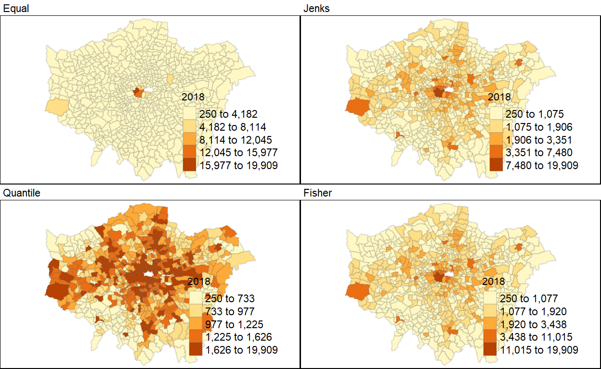

Objective
There is a growing emphasis on crime analysis by law enforcement agencies over the past decades. Crime analysis is defined as the systematic study of crime and disorder problems as well as other police-related issuesincluding socio-demographic, spatial, and temporal factorsto assist the police in criminal apprehension, crime and disorder reduction, crime prevention, and evaluation (Santos, 2016).
A literature review will be conducted to understand the how analysis of crime data was done before. Thereafter,This article will analyse historical crimes in Greater London, UK, particularly using the hot-spots and spatial clustering methods to give insights on the crime in the metropolitan.
The analysis will be presented in the form of visualization and they will be part of the Shiny-App dashboard in the future.
1. Storyboard
The storyboard will depict the EDA module of the ShinyApp and it would consists of filter panel, geo-spatial visualization and time series of crimes.

It is important to show visualize the EDA in geo-spatial format as the data touches on crimes within a city and it would be difficult to view the difference in crimes across the city if a crosstab was used to display it.
The time series line plot would allow one to observe any trends over time.
A filter panel is essential to maximise interactivity. However, this will be explored during the coding of the ShinyApp.
2. Literature review
There are different methods in displaying geo-spatial data. Based on studies by Tennekes, M., tmap R package provides a wide range of plotting methods for users. If the exact locations of each crime is known, they could be plotted as a dot map.

Tennekes had demonstrated that the smooth_map function with the package could visualize crime density by area in a smoothed density contoured lines and spatial polygons that represent areas with uniform density value,
While the Kernel density map for the crime is able to show area with high density of crimes per area, it does not partake any spatial autocorrection analysis to visualize spatial pattern or hotspot detection. Chaikaew, Tripathi & Souris had written an article on Exploring spatial patterns and hotspots of diarrhea in Chiang Mai, Thailand and they had applied an drew up an flowchart to depict how they devise their analysis.

They have utilized local Moran statistics and locations by type of association (LISA cluster map) to indicate spatial clusters. On the other hand, they had calculated local spatial correlation indices to display the hotspots. Nonetheless, a multiplicative measure of overall spatial association of values which fall within a given distance of each other, such as Getis and Ords G-Statistics could be explored to depict distance based clustering.

Literature Source
Nakarin Chaikaew, Nitin K Tripathi & Marc Souris, Exploring spatial patterns and hotspots of diarrhea in Chiang Mai, Thailand, International Journal of Health Geographics, 24 June 2009
Tennekes, M., tmap: Thematic Maps in R, for Journal of Statistical Software, April 2018, Volume 84, Issue 6.
3. Step-by-step Data Preparation
3.1 Installing and launching relevant R packages
3.2 Datasource
The datasets used in this analysis are taken from London Datastore, which is a data repository created by Greater London Authority (GLA). The datasets for the analysis are as follows:
- Recorded Crime: Geographic Breakdown
- Historic crimes from Mar 2010 till Dec 2018
- Recent 24 months crimes
- Statistical GIS Boundary Files for London
- Wards level - Ward is the primary unit of English electoral geography
- Borough level - Boroughs are local authority districts that make up the ceremonial county of Greater London, with each Borough divided into different wards.
- Population and housing density of Greater London at Borough level
3.3 Importing of crime dataset into R
The dataset are in CSV format, hence read_csv() function of readr package was used to import the data for both past 24 months and historical ones.
crime_his = read_csv('data/MPS_Ward_Level_Crime_Historic_NewWard.csv')
Parsed with column specification:
cols(
.default = col_double(),
WardCode = col_character(),
`Ward Name` = col_character(),
Borough = col_character(),
`Major Category` = col_character(),
`Minor Category` = col_character()
)See spec(...) for full column specifications.crime_24mths = read_csv('data/MPS Ward Level Crime (most recent 24 months).csv')
Parsed with column specification:
cols(
.default = col_double(),
MajorText = col_character(),
MinorText = col_character(),
WardName = col_character(),
WardCode = col_character(),
LookUp_BoroughName = col_character()
)
See spec(...) for full column specifications.3.4 Understanding the crime data
The structure of the data was examined.
3.5 Unpivoting crime dataset
It was observed that the data sets were presented in pivoted format whereby the month year of when the crime had took place are presented as individual columns. pivot_longer() function of tidyverse was used to unpivot the data. A new column Month_Year is created to account for the month of the crimes and this column is converted into date using as.Date() function. Other columns are renamed for easier reference and to be consistent between the 2 datasets.
crime_his_tab = crime_his %>%
pivot_longer(!c(`Major Category`,
`Minor Category`,
`Ward Name`,
WardCode,
Borough),
names_to = 'Month_Year', values_to = 'Count') %>%
rename(`WardName` = `Ward Name`,
`Crime_Sub_Category` = `Minor Category`,
`Crime_Category` = `Major Category`,
`BoroughName` = `Borough`) %>%
mutate(Month_Year=as.Date(paste0(Month_Year,'01'), format="%Y%m%d"))
crime_24mths_tab = crime_24mths %>%
pivot_longer(!c(MajorText,
MinorText,
WardName,
WardCode,
LookUp_BoroughName),
names_to = 'Month_Year', values_to = 'Count') %>%
rename(`Crime_Sub_Category` = `MinorText`,
`Crime_Category` = `MajorText`,
`BoroughName` = `LookUp_BoroughName`) %>%
mutate(Month_Year=as.Date(paste0(Month_Year,'01'), format="%Y%m%d"))
glimpse(crime_his_tab)
Observations: 2,113,230
Variables: 7
$ WardCode <chr> "E05000026", "E05000026", "E05000026",...
$ WardName <chr> "Abbey", "Abbey", "Abbey", "Abbey", "A...
$ BoroughName <chr> "Barking and Dagenham", "Barking and D...
$ Crime_Category <chr> "Burglary", "Burglary", "Burglary", "B...
$ Crime_Sub_Category <chr> "Burglary In A Dwelling", "Burglary In...
$ Month_Year <date> 2010-04-01, 2010-05-01, 2010-06-01, 2...
$ Count <dbl> 9, 4, 6, 6, 12, 5, 3, 11, 8, 8, 7, 4, ...glimpse(crime_24mths_tab)
Observations: 537,840
Variables: 7
$ Crime_Category <chr> "Arson and Criminal Damage", "Arson an...
$ Crime_Sub_Category <chr> "Arson", "Arson", "Arson", "Arson", "A...
$ WardName <chr> "Abbey", "Abbey", "Abbey", "Abbey", "A...
$ WardCode <chr> "E05000026", "E05000026", "E05000026",...
$ BoroughName <chr> "Barking and Dagenham", "Barking and D...
$ Month_Year <date> 2019-01-01, 2019-02-01, 2019-03-01, 2...
$ Count <dbl> 1, 0, 1, 0, 1, 0, 0, 0, 0, 2, 2, 0, 0,...3.6 Comparison of datasets
The unique values of Borough and Ward-Code are studied between the historical and past 24 months crime datasets.It was observed that the names of borough was identical, but not for Ward level, there are 90 wards with different ward codes.
[1] TRUE TRUE TRUE TRUE TRUE TRUE TRUE TRUE TRUE TRUE TRUE TRUE TRUE
[14] TRUE TRUE TRUE TRUE TRUE TRUE TRUE TRUE TRUE TRUE TRUE TRUE TRUE
[27] TRUE TRUE TRUE TRUE TRUE TRUEcompare = tibble(binary = sort(unique(crime_24mths_tab$WardCode))
%in% sort(unique(crime_his_tab$WardCode)))
nrow(filter(compare,binary ==FALSE))
[1] 90Further comparison was made between the historical and past 24 months crime datasets on the crime categories and it revealed that the crime categorization are and this may complicate study if the 2 datasets were to be appended together.
compare_crime = list(Hist = sort(unique(crime_his_tab$Crime_Category)),
Mths24 = sort(unique(crime_24mths_tab$Crime_Category)))
paged_table(data.frame(lapply(compare_crime, "length<-", max(lengths(compare_crime)))))
It was decided that only historical crime dataset will be used due to the incompatibility and the past 24 months data includes a blackswan event (Covid-19) in year 2020.
3.7 Further analysis of data
The crime dataset was furthered studied using the summary() function and it verified that the earliest month-year was Apr 2010.
summary(crime_his_tab)
WardCode WardName BoroughName
Length:2113230 Length:2113230 Length:2113230
Class :character Class :character Class :character
Mode :character Mode :character Mode :character
Crime_Category Crime_Sub_Category Month_Year
Length:2113230 Length:2113230 Min. :2010-04-01
Class :character Class :character 1st Qu.:2012-06-01
Mode :character Mode :character Median :2014-08-01
Mean :2014-08-01
3rd Qu.:2016-10-01
Max. :2018-12-01
Count
Min. : 0.000
1st Qu.: 0.000
Median : 1.000
Mean : 3.099
3rd Qu.: 4.000
Max. :851.000 3.8 Transforming of data
An additional field Year was created to show the year of the crime and the data is filtered using filter() from dplyr package to take in only data from 2011 onward as the data from 2010 does not contain the full year data.
crime_his_tab = crime_his_tab %>%
mutate(Year = year(Month_Year)) %>%
filter(Year >= 2011)
The data is further summarized by year and ward level
crime_his_tab_ward = crime_his_tab %>%
group_by(WardName,WardCode, Year) %>%
summarize(Total_count = sum(Count)) %>%
pivot_wider(names_from = Year,
values_from = Total_count)
`summarise()` has grouped output by 'WardName', 'WardCode'. You can override using the `.groups` argument.4 Step-by-step Visualization and Analysis Preparation
4.1 Reading of map
readOGR() function of rgdal package was used to read OGR vector maps into Spatial objects. st_read() is not used as we require the file to be read as sp for further analysis
City of London is not present in the crime dataset, hence it will be removed from the geospatial data using subset() function to ensure consistency during subsequent analysis.
A total of 630 wards was read. A quick thematic map (QTM) using qtm() function from tmap package is plotted to verify the removal of City of London, which is shown as a blank space in the middle of Greater London.
qtm(london)
4.2 Joining of geospatial and crime data
The geospatial and the crime data (aspatial) will be combined into 1 data using the left_join() function of dplyr package.The geospatial data will be used as the based data object, while the crime data will be used as the join table. The join fields are GSS_CODE and WardCode from the respective data. Ward names are not used as they are not unique and could be the same in multiple boroughs. Hence, a new field, Ward-Borough, is created to allow easier differentiation of common ward names.
To simplify the study, all spatial analysis would only study crimes tht occurred in year 2018.
4.3 Exploring the style of presentation
A quick exploration of the maps in different thematic styles were explored using tm_shape() function from tmap.
tmap_mode("plot")
tmap mode set to plottingmap1 = tm_shape(london) +
tm_fill("2018", style="equal") +
tm_borders(alpha = 0.2) +
tm_layout(main.title = "Equal", main.title.size = 0.7 ,
legend.position = c("right", "bottom"), legend.title.size = 0.8)
map2 = tm_shape(london) +
tm_fill("2018", style="jenks") +
tm_borders(alpha = 0.2) +
tm_layout(main.title = "Jenks", main.title.size = 0.7 ,
legend.position = c("right", "bottom"), legend.title.size = 0.8)
map3 = tm_shape(london) +
tm_fill("2018", style="quantile") +
tm_borders(alpha = 0.2) +
tm_layout(main.title = "Quantile", main.title.size = 0.7 ,
legend.position = c("right", "bottom"), legend.title.size = 0.8)
map4 = tm_shape(london) +
tm_fill("2018", style="fisher") +
tm_borders(alpha = 0.2) +
tm_layout(main.title = "Fisher", main.title.size = 0.7 ,
legend.position = c("right", "bottom"), legend.title.size = 0.8)
tmap_arrange(map1,map2,map3,map4,outer.margins = 0, ncol = 2)

As pointed out in the literature review, tmap offers a wide range of configuration to visualize the geospatial data in different color schema. However, it is important to display the contrast of the colours with analytical values.
4.4 Exploration of Local Indicators for Spatial Association (LISA)
4.4.1 Creating list of neighbours
The list of neighbours of each Ward level polygons are identified using the poly2nb() function from spdep package. This package procides a collection of functions to create spatial weights matrix, building neighbour lists and tests for spatial autocorrelation,including global Morans I and Gearys C
A Queen contiguity matrix is first constructed. Queen would consider 2 polygons neighbours as long as a single shared boundary point meets the contiguity condition.
wm_q <- poly2nb(london, queen=TRUE)
summary(wm_q)
Neighbour list object:
Number of regions: 629
Number of nonzero links: 3686
Percentage nonzero weights: 0.9316527
Average number of links: 5.860095
Link number distribution:
1 2 3 4 5 6 7 8 9 10 11 12
1 4 14 73 171 177 117 52 13 4 2 1
1 least connected region:
0 with 1 link
1 most connected region:
134 with 12 linksplot() function is used to visualize the resultant mapping of neighbours from using the Queen continuity matrix
4.4.2 Row standardized weighted matrix
Row standardized weighted matrix is the process of normalizing each row of the matrix and assigned weightage to address polygons that have unequal number of neighbours.
rswm_q <- nb2listw(wm_q, zero.policy = TRUE)
summary(rswm_q)
Characteristics of weights list object:
Neighbour list object:
Number of regions: 629
Number of nonzero links: 3686
Percentage nonzero weights: 0.9316527
Average number of links: 5.860095
Link number distribution:
1 2 3 4 5 6 7 8 9 10 11 12
1 4 14 73 171 177 117 52 13 4 2 1
1 least connected region:
0 with 1 link
1 most connected region:
134 with 12 links
Weights style: W
Weights constants summary:
n nn S0 S1 S2
W 629 395641 629 222.8078 2562.1364.4.3 local Morans I statistics
localmoran() function from spdep package calculates the local spatial statistic Morans I for each zone based on the spatial weights.
Ii: the local Morans I statistics E.Ii: the expectation of local Moran statistic Var.Ii: the variance of local Moran statistic Z.Ii:the standard deviate of local Moran statistic Pr(): the p-value of local Moran statistic
The Morans I was calculated and a few samples of the result is shown.
fips <- order(london$Ward_Borough)
localMI <- localmoran(london$`2018`, rswm_q)
Mapping local Morans I and p values values
london.localMI <- cbind(london,localMI)
localMI.map <- tm_shape(london.localMI) +
tm_fill(col = "Ii",
palette = "YlOrRd",
title = "local moran statistics") +
tm_borders(alpha = 0.5)
pvalue.map <- tm_shape(london.localMI) +
tm_fill(col = "Pr.z...0.",
breaks=c(-Inf, 0.001, 0.01, 0.05, 0.1, Inf),
palette="-Blues",
title = "local Moran's I p-values") +
tm_borders(alpha = 0.5)
tmap_arrange(localMI.map, pvalue.map, asp=1, ncol=2)
4.4.4 Moran scatterplot with standardised variable
The Morans I scatterplot is plotted using standardized scale.
london$Z.2018 <- scale(london$`2018`) %>% as.vector
nci <- moran.plot(london$Z.2018, rswm_q, labels=as.character(london$Ward_Borough),
xlab="z-crime 2018", ylab="Spatially Lag z-crime 2018")
4.4.5 LISA Cluster map
The LISA cluster map would then created. 4 quadrants would be created based on the mean values of the crimes and the significance level is set at 5%.
quadrant <- vector(mode="numeric",length=nrow(localMI))
C_Mean <- london$'2018' - mean(london$`2018`)
C_mI <- localMI[,1] - mean(localMI[,1])
signif <- 0.05 # 5% significance level
quadrant[C_Mean <0 & C_mI<0] <- 1
quadrant[C_Mean <0 & C_mI>0] <- 2
quadrant[C_Mean >0 & C_mI<0] <- 3
quadrant[C_Mean >0 & C_mI>0] <- 4
quadrant[localMI[,5]>signif] <- 0
london.localMI$quadrant <- quadrant
colors <- c("#ffffff", "cornflowerblue", "cyan1", "chocolate1", "firebrick")
clusters <- c("insignificant", "low-low", "low-high", "high-low", "high-high")
tm_shape(london.localMI) +
tm_fill(col = "quadrant", style = "cat",
palette = colors[c(sort(unique(quadrant)))+1],
labels = clusters[c(sort(unique(quadrant)))+1],
popup.vars = c("Postal.Code")) +
tm_view(set.zoom.limits = c(11,17)) +
tm_borders(alpha=0.5)
4.5 Hot Spot and Cold Spot Area Analysis
4.5.1 Findng neighbours
Statistically significant hot-spots and cold-spots could be mapped by looking at neighbours within a defined proximity. This analysis is performed using High/Low Clustering (Getis-Ord General G).
dnearneigh() function from spdep is used to identify neighbours of region points by Euclidean distance between lower and upper bounds. The specific distance was used to ensure all objects have at least 1 link. As the data is not in kilometres scale, longlat is turned off.
dnb <- dnearneigh(coordinates(london), 0,2940, longlat = NULL)
dnb
Neighbour list object:
Number of regions: 629
Number of nonzero links: 8624
Percentage nonzero weights: 2.179754
Average number of links: 13.71065 The resultant neighbour plot is as shown below.
A listw type spatial weights object is created using nb2listw() function from spdep and a basic binary distance weights is applied.
dnb_lw <- nb2listw(dnb, style = 'B')
summary(dnb_lw)
Characteristics of weights list object:
Neighbour list object:
Number of regions: 629
Number of nonzero links: 8624
Percentage nonzero weights: 2.179754
Average number of links: 13.71065
Link number distribution:
1 2 3 4 5 6 7 8 9 10 11 12 13 14 15 16 17 18 19 20 21 22 23
9 11 13 21 16 26 31 37 38 54 48 33 22 25 22 24 13 22 16 19 20 16 15
24 25 26 27 28 29 30 31 32 33 34
8 13 9 13 10 7 8 3 3 3 1
9 least connected regions:
1 41 44 45 106 107 124 125 356 with 1 link
1 most connected region:
477 with 34 links
Weights style: B
Weights constants summary:
n nn S0 S1 S2
B 629 395641 8624 17248 611352Adaptive distance method can also be used to derived the proximity matrix
coords <- coordinates(london)
knb <- knn2nb(knearneigh(coords, k=5, longlat = NULL),
row.names=row.names(london$`2018`))
knb_lw <- nb2listw(knb, style = 'B')
summary(knb_lw)
Characteristics of weights list object:
Neighbour list object:
Number of regions: 629
Number of nonzero links: 3145
Percentage nonzero weights: 0.7949126
Average number of links: 5
Non-symmetric neighbours list
Link number distribution:
5
629
629 least connected regions:
1 2 3 4 5 6 7 8 9 10 11 12 13 14 15 16 17 18 19 20 21 22 23 24 25 26 27 28 29 30 31 32 33 34 35 36 37 38 39 40 41 42 43 44 45 46 47 48 49 50 51 52 53 54 55 56 57 58 59 60 61 62 63 64 65 66 67 68 69 70 71 72 73 74 75 76 77 78 79 80 81 82 83 84 85 86 87 88 89 90 91 92 93 94 95 96 97 98 99 100 101 102 103 104 105 106 107 108 109 110 111 112 113 114 115 116 117 118 119 120 121 122 123 124 125 126 127 128 129 130 131 132 133 134 135 136 137 138 139 140 141 142 143 144 145 146 147 148 149 150 151 152 153 154 155 156 157 158 159 160 161 162 163 164 165 166 167 168 169 170 171 172 173 174 175 176 177 178 179 180 181 182 183 184 185 186 187 188 189 190 191 192 193 194 195 196 197 198 199 200 201 202 203 204 205 206 207 208 209 210 211 212 213 214 215 216 217 218 219 220 221 222 223 224 225 226 227 228 229 230 231 232 233 234 235 236 237 238 239 240 241 242 243 244 245 246 247 248 249 250 251 252 253 254 255 256 257 258 259 260 261 262 263 264 265 266 267 268 269 270 271 272 273 274 275 276 277 278 279 280 281 282 283 284 285 286 287 288 289 290 291 292 293 294 295 296 297 298 299 300 301 302 303 304 305 306 307 308 309 310 311 312 313 314 315 316 317 318 319 320 321 322 323 324 325 326 327 328 329 330 331 332 333 334 335 336 337 338 339 340 341 342 343 344 345 346 347 348 349 350 351 352 353 354 355 356 357 358 359 360 361 362 363 364 365 366 367 368 369 370 371 372 373 374 375 376 377 378 379 380 381 382 383 384 385 386 387 388 389 390 391 392 393 394 395 396 397 398 399 400 401 402 403 404 405 406 407 408 409 410 411 412 413 414 415 416 417 418 419 420 421 422 423 424 425 426 427 428 429 430 431 432 433 434 435 436 437 438 439 440 441 442 443 444 445 446 447 448 449 450 451 452 453 454 455 456 457 458 459 460 461 462 463 464 465 466 467 468 469 470 471 472 473 474 475 476 477 478 479 480 481 482 483 484 485 486 487 488 489 490 491 492 493 494 495 496 497 498 499 500 501 502 503 504 505 506 507 508 509 510 511 512 513 514 515 516 517 518 519 520 521 522 523 524 525 526 527 528 529 530 531 532 533 534 535 536 537 538 539 540 541 542 543 544 545 546 547 548 549 550 551 552 553 554 555 556 557 558 559 560 561 562 563 564 565 566 567 568 569 570 571 572 573 574 575 576 577 578 579 580 581 582 583 584 585 586 587 588 589 590 591 592 593 594 595 596 597 598 599 600 601 602 603 604 605 606 607 608 609 610 611 612 613 614 615 616 617 618 619 620 621 622 623 624 625 626 627 628 629 with 5 links
629 most connected regions:
1 2 3 4 5 6 7 8 9 10 11 12 13 14 15 16 17 18 19 20 21 22 23 24 25 26 27 28 29 30 31 32 33 34 35 36 37 38 39 40 41 42 43 44 45 46 47 48 49 50 51 52 53 54 55 56 57 58 59 60 61 62 63 64 65 66 67 68 69 70 71 72 73 74 75 76 77 78 79 80 81 82 83 84 85 86 87 88 89 90 91 92 93 94 95 96 97 98 99 100 101 102 103 104 105 106 107 108 109 110 111 112 113 114 115 116 117 118 119 120 121 122 123 124 125 126 127 128 129 130 131 132 133 134 135 136 137 138 139 140 141 142 143 144 145 146 147 148 149 150 151 152 153 154 155 156 157 158 159 160 161 162 163 164 165 166 167 168 169 170 171 172 173 174 175 176 177 178 179 180 181 182 183 184 185 186 187 188 189 190 191 192 193 194 195 196 197 198 199 200 201 202 203 204 205 206 207 208 209 210 211 212 213 214 215 216 217 218 219 220 221 222 223 224 225 226 227 228 229 230 231 232 233 234 235 236 237 238 239 240 241 242 243 244 245 246 247 248 249 250 251 252 253 254 255 256 257 258 259 260 261 262 263 264 265 266 267 268 269 270 271 272 273 274 275 276 277 278 279 280 281 282 283 284 285 286 287 288 289 290 291 292 293 294 295 296 297 298 299 300 301 302 303 304 305 306 307 308 309 310 311 312 313 314 315 316 317 318 319 320 321 322 323 324 325 326 327 328 329 330 331 332 333 334 335 336 337 338 339 340 341 342 343 344 345 346 347 348 349 350 351 352 353 354 355 356 357 358 359 360 361 362 363 364 365 366 367 368 369 370 371 372 373 374 375 376 377 378 379 380 381 382 383 384 385 386 387 388 389 390 391 392 393 394 395 396 397 398 399 400 401 402 403 404 405 406 407 408 409 410 411 412 413 414 415 416 417 418 419 420 421 422 423 424 425 426 427 428 429 430 431 432 433 434 435 436 437 438 439 440 441 442 443 444 445 446 447 448 449 450 451 452 453 454 455 456 457 458 459 460 461 462 463 464 465 466 467 468 469 470 471 472 473 474 475 476 477 478 479 480 481 482 483 484 485 486 487 488 489 490 491 492 493 494 495 496 497 498 499 500 501 502 503 504 505 506 507 508 509 510 511 512 513 514 515 516 517 518 519 520 521 522 523 524 525 526 527 528 529 530 531 532 533 534 535 536 537 538 539 540 541 542 543 544 545 546 547 548 549 550 551 552 553 554 555 556 557 558 559 560 561 562 563 564 565 566 567 568 569 570 571 572 573 574 575 576 577 578 579 580 581 582 583 584 585 586 587 588 589 590 591 592 593 594 595 596 597 598 599 600 601 602 603 604 605 606 607 608 609 610 611 612 613 614 615 616 617 618 619 620 621 622 623 624 625 626 627 628 629 with 5 links
Weights style: B
Weights constants summary:
n nn S0 S1 S2
B 629 395641 3145 5773 63952The resultant plot is as follows.
4.5.2 Mapping Gi values with fixed distance and adaptive distance weights
Gi values,represented as a Z-score, is calculated using both fixed and adaptive distance matrix methods. Both methods are used to compare the difference in the result. localG() function from spdep is used used to calculate the Gi values.
Fixed distance weight
Adaptive distance weight
The difference between the 2 different distance weight can be shown clearly when the map object is plotted.
gi_map_a = tm_shape(london.gi_a) +
tm_fill(col = "gstat_adaptive",
style = "pretty",
palette = "-RdBu",
title = "local Gi") +
tm_borders(alpha = 0.5)+
tm_layout(main.title = "gi adaptive distance weights", main.title.size = 1)
gi_map_f =tm_shape(london.gi_f) +
tm_fill(col = "gstat",
style = "pretty",
palette="-RdBu",
title = "local Gi") +
tm_borders(alpha = 0.5)+
tm_layout(main.title = "gi fixed distance weights", main.title.size = 1 )
tmap_arrange(gi_map_a, gi_map_f, asp=1, ncol=2)
5 Applying on Borough level
The analysis had focused on Ward level, now similar approach is applied for Borough level data for comparison. There is available information on population at borough level and Since crime rate is often used in the form of crime per 100,000 population, the borough level data would present in terms of crime rate and there would remove any misrepresentation of data due to population factor (i.e.larger population is likely to have higher crime). Hence, differences between Ward and Borough visualization is expected.
The dataset is different and for simplicity, the data would focus on year 2018 data for this analysis.
qtm() is used to give a quick view of crime rate at borough level and total crimes at Ward level for year 2018.
london_b <- readOGR(dsn = "Data/London-wards-2018_ESRI",
layer = "London_Borough_Excluding_MHW") %>%
subset(NAME !="City of London")
crime_his_b = read_csv('data/MPS_Borough_Level_Crime_Historic.csv')
pop = read_csv('data/housing-density-borough.csv')
crime_his_tab_b = crime_his_b %>%
pivot_longer(!c(`Borough`,
`Major Category`,
`Minor Category`),
names_to = 'Month_Year', values_to = 'Count') %>%
rename(`Crime_Sub_Category` = `Minor Category`,
`Crime_Category` = `Major Category`,
`BoroughName` = `Borough`) %>%
mutate(Month_Year=as.Date(paste0(Month_Year,'01'), format="%Y%m%d")) %>%
mutate(Year = year(Month_Year)) %>%
filter(Year == 2018) %>%
group_by(BoroughName, Year) %>%
summarize(Total_count = sum(Count))
crime_his_tab_b = left_join(crime_his_tab_b,pop, by = c("BoroughName" = "Name","Year" = "Year")) %>%
mutate(Crime_rate = (Total_count / Population*100000))
london_b@data <- left_join(london_b@data,crime_his_tab_b,
by = c("NAME" = "BoroughName"))
tmap_mode("plot")
tmap_arrange(qtm(london, "2018", fill.title = "Crimes at Ward level, 2018")
, qtm(london_b, "Crime_rate", fill.title = "Crime rate at Borough level, 2018") ,
asp=1, ncol=2)
It is observed that the polygons of the Borough across River Thames are not connected and this may post implications as we calculate the neighours.
As expected the Borough are not able to find the nearest neighbours due to the separation at the river.

Snap can be adjusted to address this issue on a best effort basis.
wm_q_b <- poly2nb(london_b, snap = 500, row.names = london_b$NAME, queen=TRUE)
summary(wm_q_b)
Neighbour list object:
Number of regions: 32
Number of nonzero links: 152
Percentage nonzero weights: 14.84375
Average number of links: 4.75
Link number distribution:
2 3 4 5 6 7
2 3 9 7 9 2
2 least connected regions:
Havering Bexley with 2 links
2 most connected regions:
Brent Wandsworth with 7 linksThe corresponding mapping local Morans I values are as shown below
Plotting Moran scatterplot
Preparation of LISA cluster map
tmap mode set to plottingHot Spot and Cold Spot Area Analysis
6. Plotting of time series with seasonal decomposition
A The seasonality of the crime data could be analysed using ggsdc() function of ggseas package. This function is able to display the data into different composition for easier understanding.
time_viz = ggsdc(crime_his_tab_b_time, aes(x = x, y = Total_count)
, method = "seas", start = c(2011, 1), frequency = 12,
facet.titles = c("The original series",
"The underlying trend",
"Regular seasonal patterns",
"All the randomness left")) +
geom_line() +
labs(x = 'Date', y = "Crimes In London")
time_viz

7. Finalized visualization

8. Conclusion & insights
Data exploration and cleaning is essential prior to the visualization.
The visualization reveals that the certain area within London tends to have higher crime rate and there is a seasonal trend in crimes. Local Morans I is able to identify clusters and outliers, while Gi statistics are able to detect the cold and hot spots of crimes.It is important to include underlying analysis method such that the color contrast shown on the visualized map is meaningful.
Westminster, a Borough in central London is observed to have comparatively high crime rate compared to the rest of hte metropolitan. Further analysis could be done in the future to understand what factors could have contribute to its high crime rate.
9. Reference
ggseas V0.5.4 R package, Peter Ellis, https://cran.r-project.org/web/packages/ggseas/ggseas.pdf
tmap: Thematic Maps in R, Martijn Tennekes, 2018, https://ij-healthgeographics.biomedcentral.com/articles/10.1186/1476-072X-8-36, https://www.jstatsoft.org/article/view/v084i06/v84i06.pdf